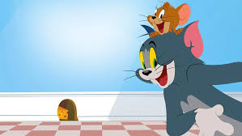

Hello and welcome to the game club!


About this website
Hello and welcome to the game club!
WHY IS IT FUN?
This website is a gameclub for all TOM and JERRY fans worldwide! With the classic cartoon turned into a fantastic game. With many game modes to choose from and interactivity worldwide this website ensures fun time It also have character's story, gaemmodes and so much more.
HOW TO JOIN?
With many options to choose form you can simply join by creating an account inside the "JOIN NOW" navigation bar You can use your gmail address to crate an account. We are glad that you are enjoying tom and jerry as much as we do.
FUN FACTS :
1.Creation: Tom and Jerry was created by William Hanna and Joseph Barbera and first premiered in 1940. 2.Academy Awards: The series won seven Academy Awards for Animated Short Film during its original run. 3.Minimal Dialogue: The show is known for its minimal dialogue; most of the storytelling is done through visual gags and music. 4.Character Design: The original designs of Tom and Jerry were quite different from what we know today. Tom was initially gray and white, while Jerry was a more detailed brown. 5.Inspiration: The characters were inspired by the classic cat-and-mouse chase trope, but their antics have drawn influence from various slapstick comedy traditions. 6.Merchandising: Tom and Jerry has spawned a wide range of merchandise, including toys, clothing, and video games. 7.Spin-offs: The popularity of the characters led to several spin-off series, including The Tom and Jerry Show and Tom and Jerry Tales. 8.Global Reach: The show has been translated into numerous languages and is beloved worldwide, appealing to both children and adults. 9.Censorship: Some episodes have been edited or banned in various countries due to their violent content and portrayals of certain stereotypes. 10.Enduring Legacy: Tom and Jerry remains one of the most iconic animated duos and continues to influence cartoons and pop culture to this day.